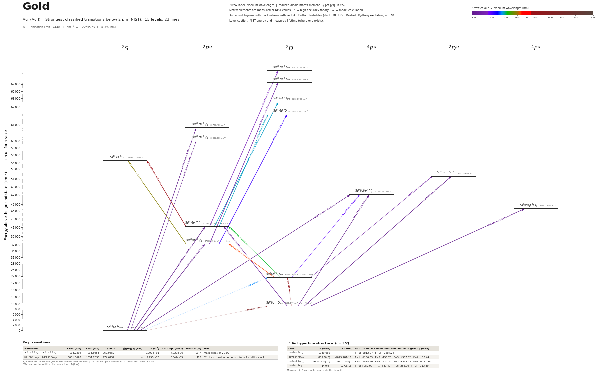

Gold energy level diagram
Energy levels and transitions of neutral gold (Au I): the 23 strongest classified lines below 2 µm from the NIST Atomic Spectra Database and the 15 levels they connect, each line with its vacuum wavelength, frequency and, for 20 of them, the reduced dipole matrix element derived from the NIST transition rate. Measured lifetimes, transition rates, hyperfine constants and isotope shifts from the literature are included, each with its citation.
Hover a line or a level to isolate it, click to keep it selected. Scroll to zoom, drag to move.

Download: diagram (PDF) diagram (SVG) transitions (CSV) levels (CSV) source code

Key transitions of gold
| Transition | λ vac (nm) | λ air (nm) | ν (THz) | |⟨J‖er‖J′⟩| (ea₀) | A (s⁻¹) | Γ/2π up. (MHz) | branch (%) | Use |
|---|---|---|---|---|---|---|---|---|
| 5d96s2 2D5/2 – 5d96s2 2D3/2 | 814.7294 | 814.5054 | 367.9657 | – | 2.990e+01 | 4.823e-06 | 98.7 | main decay of 2D3/2 |
| 5d106s 2S1/2 – 5d96s2 2D5/2 | 1091.5628 | 1091.2639 | 274.6452 | – | 2.290e-02 | 3.642e-09 | 100 | E2 clock transition proposed for a Au lattice clock |
λ, ν from NIST level energies unless a measured frequency for this isotope is available. A: measured value or NIST. Γ/2π: natural linewidth of the upper level, 1/(2πτ).
197Au hyperfine structure (I = 3/2)
| Level | A (MHz) | B (MHz) | Shift of each F level from the centre of gravity (MHz) |
|---|---|---|---|
| 5d106s 2S1/2 | 3049.660092(7) | – | F=1: -3812.07 F=2: +2287.24 |
| 5d96s2 2D5/2 | 80.236(3) | -1049.781(11) | F=1: -1156.09 F=2: -155.79 F=3: +557.32 F=4: +38.44 |
| 5d96s2 2D3/2 | 199.84250(20) | -911.0766(5) | F=0: -1888.26 F=1: -777.34 F=2: +533.43 F=3: +221.88 |
| 5d106p 2P°1/2 | 321.7(12) | – | F=1: -402.12 F=2: +241.28 |
| 5d106p 2P°3/2 | 14.0(5) | 327.6(16) | F=0: +357.00 F=1: +43.40 F=2: -256.20 F=3: +113.40 |
Measured A, B constants; sources in the data file.
Closed and nearly closed transitions of gold
| Transition | λ vacuum (nm) | Lower level | A (s⁻¹) | Leak per scattered photon | Photons before a leak | Where the leak goes |
|---|---|---|---|---|---|---|
| 5d96s2 2D5/2 → 5d96s6p 4F°7/2 | 274.9064 | metastable | 1.030e+07 NIST | closed | – | no other level can be reached by electric-dipole decay |
| 5d106s 2S1/2 → 5d106p 2P°1/2 | 267.6732 | ground | 1.640e+08 NIST | 2 % from measured data | 50 | 5d96s2 2D3/2 2.04 % (long-lived) |
| 5d96s2 2D5/2 → 5d96s6p 2D°5/2 | 235.3344 | metastable | 8.000e+06 NIST | 3.73 % from NIST data | 27 | 5d96s2 2D3/2 3.73 % (long-lived) |
| 5d106s 2S1/2 → 5d106p 2P°3/2 | 242.8681 | ground | 1.980e+08 NIST | 8.9 % from measured data | 11 | 5d96s2 2D5/2 8.74 % (long-lived); 5d96s2 2D3/2 0.239 % (long-lived); 5d106p 2P°1/2 2.24 × 10−9* |
A transition is closed when its upper level can decay only to the level it was excited from, so the atom keeps scattering photons. “closed”: among the levels NIST lists, no other level below the upper level has the opposite parity and |ΔJ| ≤ 1, so no other electric-dipole decay exists. Otherwise the leak is the sum of the branching ratios of the other decay lines of the upper level (or 1 − branching ratio where that of the line itself has been measured), and the number of photons is 1 / leak. “≥” and “≤”: at least one possible decay path has no listed rate, so the leak is a lower limit. These numbers are derived from the branching ratios, lifetimes and rates of this page, not measured as such; the tag names the weakest of the inputs, * marks theory and ≈ a model or semi-empirical calculation. Listed: lines that start on the ground level or on a metastable level and leak at most 10 %, unless more than three possible decay paths have no listed rate. Fine-structure levels only: hyperfine and Zeeman dark states and forbidden decays without a listed rate are not considered. Select a line in the diagram for the full list of its leak channels.
Listed Au transitions below 2 µm
| Lower level | Upper level | λ vacuum (nm) | λ air (nm) | ν (THz) | Type | |⟨J‖er‖J′⟩| (ea₀) | A (s⁻¹) | Branching (%) | Source of matrix element / A |
|---|---|---|---|---|---|---|---|---|---|
| 5d106s 2S1/2 | 5d107p 2P°3/2 | 164.6674 | – | 1820.5943 | E1 | 0.297 NIST | 1.000e+07 NIST | 5.3 | NIST ASD (accuracy D) |
| 5d106s 2S1/2 | 5d107p 2P°1/2 | 166.5755 | – | 1799.7396 | E1 | 0.0331 NIST | 2.400e+05 NIST | 0.154 | NIST ASD (accuracy E) |
| 5d106s 2S1/2 | 5d96s6p 4P°3/2 | 212.7323 | 212.6651 | 1409.2474 | E1 (intercombination) | 0.269 NIST | 3.800e+06 NIST | – | NIST ASD (accuracy E) |
| 5d96s2 2D5/2 | 5d96s6p 2D°5/2 | 235.3344 | 235.2624 | 1273.8998 | E1 | 0.556 NIST | 8.000e+06 NIST | – | NIST ASD (accuracy D) |
| 5d106s 2S1/2 | 5d106p 2P°3/2 | 242.8681 | 242.7944 | 1234.3838 | E1 | 2.366 NIST | 1.980e+08 NIST | 91.1 | NIST ASD (accuracy B+) |
| 5d96s2 2D5/2 | 5d96s6p 4P°3/2 | 264.2269 | 264.1482 | 1134.6022 | E1 (intercombination) | 0.400 NIST | 4.400e+06 NIST | – | NIST ASD (accuracy D) |
| 5d106s 2S1/2 | 5d106p 2P°1/2 | 267.6732 | 267.5937 | 1119.9944 | E1 | 1.762 NIST | 1.640e+08 NIST | 98 | NIST ASD (accuracy A+) |
| 5d96s2 2D5/2 | 5d96s6p 4F°7/2 | 274.9064 | 274.8251 | 1090.5256 | E1 (intercombination) | 0.919 NIST | 1.030e+07 NIST | – | NIST ASD (accuracy B) |
| 5d96s2 2D5/2 | 5d106p 2P°3/2 | 312.3688 | 312.2783 | 959.7387 | E1 | 1.069 NIST | 1.900e+07 NIST | 8.74 | NIST ASD (accuracy B+) |
| 5d96s2 2D3/2 | 5d96s6p 2D°5/2 | 330.9208 | 330.8256 | 905.9341 | E1 | 0.182 NIST | 3.100e+05 NIST | – | NIST ASD (accuracy E) |
| 5d106p 2P°1/2 | 5d107d 2D3/2 | 332.1111 | 332.0155 | 902.6874 | E1 | 1.473 NIST | 3.000e+07 NIST | – | NIST ASD (accuracy C) |
| 5d106p 2P°3/2 | 5d107d 2D5/2 | 379.7071 | 379.5993 | 789.5360 | E1 | 2.278 NIST | 3.200e+07 NIST | – | NIST ASD (accuracy C) |
| 5d96s2 2D3/2 | 5d96s6p 4P°3/2 | 391.0490 | 390.9383 | 766.6365 | E1 (intercombination) | 0.114 NIST | 1.100e+05 NIST | – | NIST ASD (accuracy E) |
| 5d106p 2P°1/2 | 5d106d 2D3/2 | 406.6262 | 406.5114 | 737.2679 | E1 | 3.359 NIST | 8.500e+07 NIST | – | NIST ASD (accuracy B+) |
| 5d106s 2S1/2 | 5d96s2 2D3/2 | 466.5226 | 466.3920 | 642.6109 | M1 | – | 4.250e-05 theory | 0.00014 | Dzuba, Allehabi, Flambaum, Li, Schiller, Phys. Rev. A 103, 022822 (2021), Table II (M1 on… |
| 5d106p 2P°3/2 | 5d106d 2D5/2 | 479.4074 | 479.2734 | 625.3397 | E1 | 5.389 NIST | 8.900e+07 NIST | – | NIST ASD (accuracy B+) |
| 5d106p 2P°3/2 | 5d106d 2D3/2 | 481.3017 | 481.1673 | 622.8784 | E1 | 1.859 NIST | 1.570e+07 NIST | – | NIST ASD (accuracy B+) |
| 5d96s2 2D3/2 | 5d106p 2P°3/2 | 506.6004 | 506.4592 | 591.7730 | E1 | 0.365 NIST | 5.200e+05 NIST | 0.239 | NIST ASD (accuracy D) |
| 5d106p 2P°1/2 | 5d107s 2S1/2 | 583.8992 | 583.7374 | 513.4319 | E1 | 2.408 NIST | 2.950e+07 NIST | – | NIST ASD (accuracy B+) |
| 5d96s2 2D3/2 | 5d106p 2P°1/2 | 627.9908 | 627.8172 | 477.3835 | E1 | 0.912 NIST | 3.400e+06 NIST | 2.04 | NIST ASD (accuracy D) |
| 5d106p 2P°3/2 | 5d107s 2S1/2 | 751.2797 | 751.0729 | 399.0424 | E1 | 4.213 NIST | 4.240e+07 NIST | – | NIST ASD (accuracy B+) |
| 5d96s2 2D5/2 | 5d96s2 2D3/2 | 814.7294 | 814.5054 | 367.9657 | M1 | – | 2.990e+01 theory | 98.7 | Dzuba, Allehabi, Flambaum, Li, Schiller, Phys. Rev. A 103, 022822 (2021), Table II (M1, a… |
| 5d106s 2S1/2 | 5d96s2 2D5/2 | 1091.5628 | 1091.2639 | 274.6452 | clock | – | 2.290e-02 theory | 100 | Dzuba, Allehabi, Flambaum, Li, Schiller, Phys. Rev. A 103, 022822 (2021), Table II (E2, C… |
Reduced dipole matrix elements follow the convention A = ω³|d|²/(3πε₀ħc³(2J′+1)), with J′ the upper level. Tags show where a number comes from: measured, NIST compilation, high-accuracy theory, or a model calculation.
Au energy levels
Au⁺ ionisation limit 74409.11 cm⁻¹ = 9.22555 eV (134.392 nm)
Sources
- Blachman, Landman, Lurio, Phys. Rev. 161, 60 (1967), abstract; same numbers in Itano, Phy…
- Childs, Goodman, Phys. Rev. 141, 176 (1966), abstract; same numbers in Itano, Phys. Rev. …
- Dahmen, Penselin, Z. Phys. 200, 456 (1967) (atomic-beam magnetic resonance), as quoted wi…
- Dzuba, Allehabi, Flambaum, Li, Schiller, Phys. Rev. A 103, 022822 (2021), Table I (CIPT; …
- Dzuba, Allehabi, Flambaum, Li, Schiller, Phys. Rev. A 103, 022822 (2021), Table I (CIPT; …
- Dzuba, Allehabi, Flambaum, Li, Schiller, Phys. Rev. A 103, 022822 (2021), Table I footnot…
- Dzuba, Allehabi, Flambaum, Li, Schiller, Phys. Rev. A 103, 022822 (2021), Table II (E2, C…
- Dzuba, Allehabi, Flambaum, Li, Schiller, Phys. Rev. A 103, 022822 (2021), Table II (M1 on…
- Dzuba, Allehabi, Flambaum, Li, Schiller, Phys. Rev. A 103, 022822 (2021), Table II (M1, a…
- Einfeld, Ney, Wilken, Z. Naturforsch. A 26, 668 (1971), abstract (Crossref record) (level…
- Gaarde, Zerne, Luo Caiyan, Jiang Zhankui, Larsson, Svanberg, Phys. Rev. A 50, 209 (1994),…
- NIST ASD
- NIST ASD level energies
- Passler, Rikovska, Arnold, Kluge, Monz, Neugart, Ravn, Wendt, Nucl. Phys. A 580, 173 (199…
197Au is the only stable isotope (I = 3/2). Hyperfine B constants of the 5d9 6s2 2D levels are large and negative; C is the magnetic-octupole constant from the same atomic-beam papers (extra key C_MHz). All A_s and rme_J_ea0 entries are CIPT theory from Dzuba et al. 2021 (method 'theory', accuracy poor for E1: compare the 6p lifetimes) and are given only for the E2/M1 lines NIST does not list (2S1/2-2D5/2 clock, 2S1/2-2D3/2, 2D5/2-2D3/2, 2P1/2-2P3/2). No E1 entries are given: the NIST A values already rest on the Hannaford lifetimes and branching ratios, and the CIPT E1 rates of Dzuba et al. (2.45e8, 3.02e8 s^-1 for the resonance lines) are about 50 % too large. rme convention: A = 2.02613e18 |d|^2 / (lambda_vac[Angstrom]^3 (2J'+1)), J' upper level (the convention of Dzuba's Eq. 3). Extra keys beyond the schema: ionization_energy, g_J_ratio_to_Cs133, E2_amplitude_au, C_MHz, lifetime_alternatives. Second pass: 7p 2P lifetimes and 6p alternatives come from the abstract of Gaarde et al., Phys. Rev. A 50, 209 (1994); the 6p 2P3/2 width of Goldmann et al. 1969 was read in a Wayback Machine copy of the Springer abstract page. Third pass (2026-10-02): ground-state A with full precision, 6p 2P1/2 A (second-hand, see conflicts) and the branching ratios of the two resonance lines (0.98(1) and 0.911(4), Hannaford's 1986 review) added; 'branching' on the 267.6 and 242.8 nm transitions is the fraction of the 6p decay that goes to the ground level.
Atoms with measured data
- Lithium-632 levels, 85 lines
- Lithium-732 levels, 85 lines
- Beryllium-917 levels, 26 lines
- Sodium-2336 levels, 106 lines
- Magnesium-2418 levels, 61 lines
- Magnesium-2518 levels, 61 lines
- Potassium-3934 levels, 84 lines
- Potassium-4034 levels, 84 lines
- Potassium-4134 levels, 84 lines
- Calcium-4035 levels, 61 lines
- Calcium-4335 levels, 61 lines
- Chromium-5256 levels, 87 lines
- Chromium-5356 levels, 87 lines
- Rubidium-8536 levels, 94 lines
- Rubidium-8736 levels, 94 lines
- Strontium-8440 levels, 70 lines
- Strontium-8640 levels, 70 lines
- Strontium-8740 levels, 70 lines
- Strontium-8840 levels, 70 lines
- Cadmium-11115 levels, 21 lines
- Cadmium-11315 levels, 21 lines
- Cadmium-11415 levels, 21 lines
- Caesium-13331 levels, 79 lines
- Barium-13744 levels, 89 lines
- Barium-13844 levels, 89 lines
- Dysprosium-16139 levels, 55 lines
- Dysprosium-16239 levels, 55 lines
- Dysprosium-16339 levels, 55 lines
- Dysprosium-16439 levels, 55 lines
- Erbium-16673 levels, 90 lines
- Erbium-16773 levels, 90 lines
- Erbium-16873 levels, 90 lines
- Thulium-16972 levels, 73 lines
- Ytterbium-17118 levels, 26 lines
- Ytterbium-17318 levels, 26 lines
- Ytterbium-17418 levels, 26 lines
- Mercury-19927 levels, 47 lines
- Mercury-20127 levels, 47 lines
- Mercury-20227 levels, 47 lines